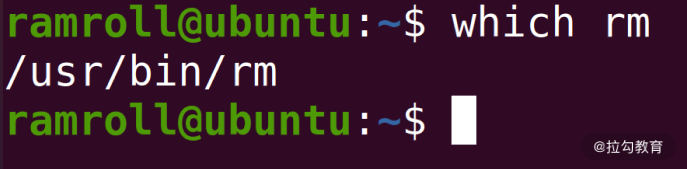
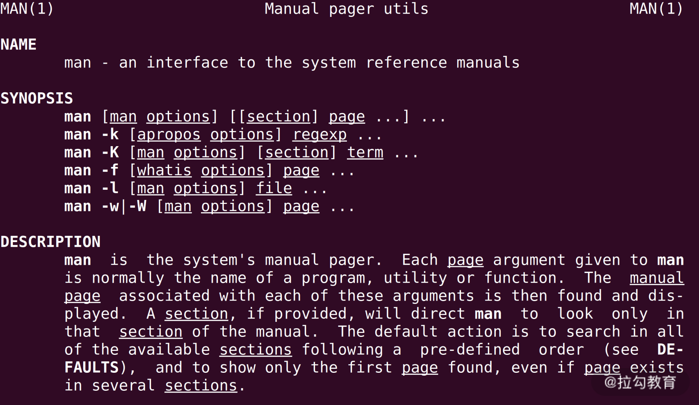
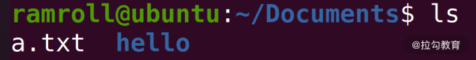
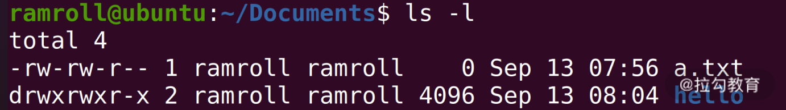
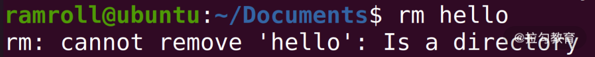
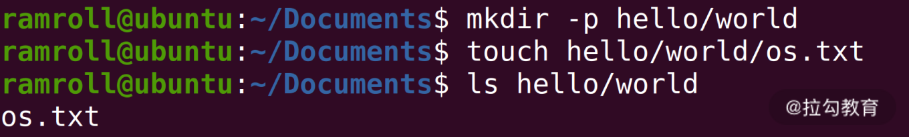
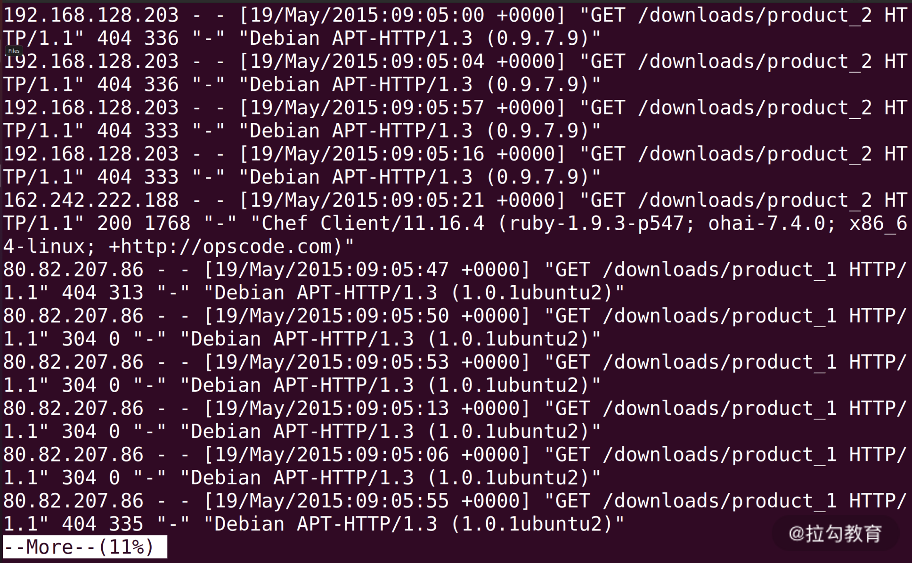
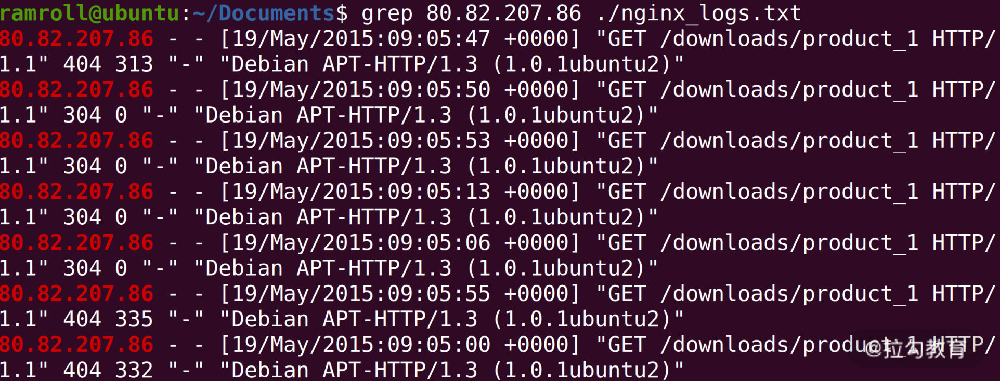
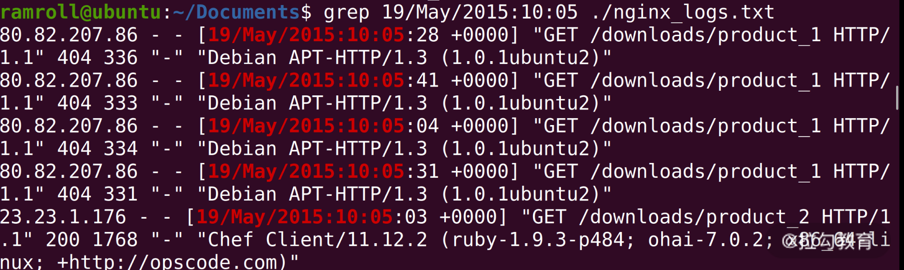
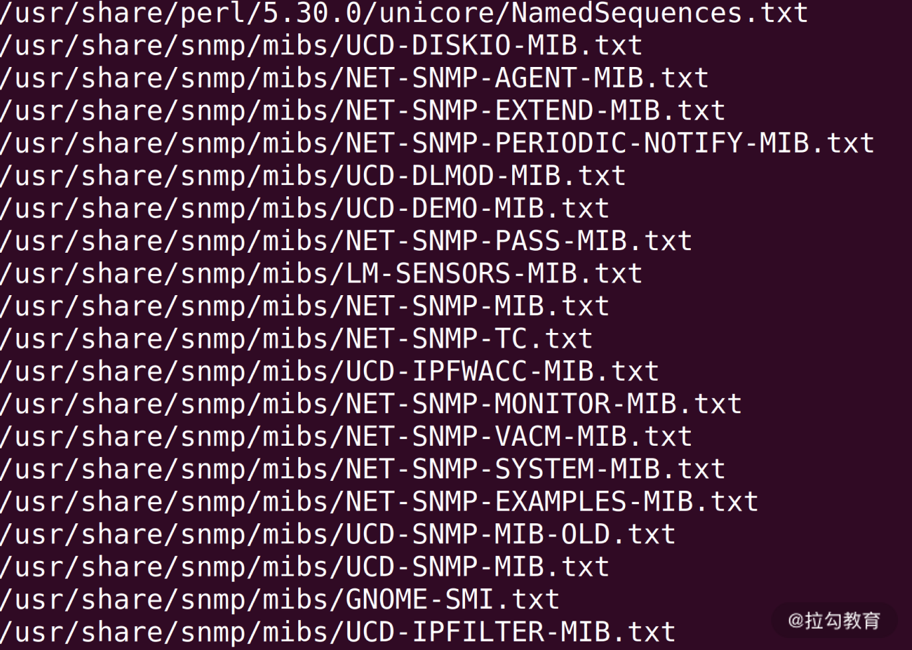

- 00 开篇词 为什么大厂面试必考操作系统？.md.html
- 00 课前必读 构建知识体系，可以这样做！.md.html
- 01 计算机是什么：“如何把程序写好”这个问题是可计算的吗？.md.html
- 02 程序的执行：相比 32 位，64 位的优势是什么？（上）.md.html
- 03 程序的执行：相比 32 位，64 位的优势是什么？（下）.md.html
- 04 构造复杂的程序：将一个递归函数转成非递归函数的通用方法.md.html
- 05 存储器分级：L1 Cache 比内存和 SSD 快多少倍？.md.html
- 05 (1) 加餐 练习题详解（一）.md.html
- 06 目录结构和文件管理指令：rm -rf 指令的作用是？.md.html
- 07 进程、重定向和管道指令：xargs 指令的作用是？.md.html
- 08 用户和权限管理指令： 请简述 Linux 权限划分的原则？.md.html
- 09 Linux 中的网络指令：如何查看一个域名有哪些 NS 记录？.md.html
- 10 软件的安装： 编译安装和包管理器安装有什么优势和劣势？.md.html
- 11 高级技巧之日志分析：利用 Linux 指令分析 Web 日志.md.html
- 12 高级技巧之集群部署：利用 Linux 指令同时在多台机器部署程序.md.html
- 12 (1)加餐 练习题详解（二）.md.html
- 13 操作系统内核：Linux 内核和 Windows 内核有什么区别？.md.html
- 14 用户态和内核态：用户态线程和内核态线程有什么区别？.md.html
- 15 中断和中断向量：Javajs 等语言为什么可以捕获到键盘输入？.md.html
- 16 WinMacUnixLinux 的区别和联系：为什么 Debian 漏洞排名第一还这么多人用？.md.html
- 16 (1)加餐 练习题详解（三）.md.html
- 17 进程和线程：进程的开销比线程大在了哪里？.md.html
- 18 锁、信号量和分布式锁：如何控制同一时间只有 2 个线程运行？.md.html
- 19 乐观锁、区块链：除了上锁还有哪些并发控制方法？.md.html
- 20 线程的调度：线程调度都有哪些方法？.md.html
- 21 哲学家就餐问题：什么情况下会触发饥饿和死锁？.md.html
- 22 进程间通信： 进程间通信都有哪些方法？.md.html
- 23 分析服务的特性：我的服务应该开多少个进程、多少个线程？.md.html
- 23 (1)加餐 练习题详解（四）.md.html
- 24 虚拟内存 ：一个程序最多能使用多少内存？.md.html
- 25 内存管理单元： 什么情况下使用大内存分页？.md.html
- 26 缓存置换算法： LRU 用什么数据结构实现更合理？.md.html
- 27 内存回收上篇：如何解决内存的循环引用问题？.md.html
- 28 内存回收下篇：三色标记-清除算法是怎么回事？.md.html
- 28 (1)加餐 练习题详解（五）.md.html
- 29 Linux 下的各个目录有什么作用？.md.html
- 30 文件系统的底层实现：FAT、NTFS 和 Ext3 有什么区别？.md.html
- 31 数据库文件系统实例：MySQL 中 B 树和 B+ 树有什么区别？.md.html
- 32 HDFS 介绍：分布式文件系统是怎么回事？.md.html
- 32 (1)加餐 练习题详解（六）.md.html
- 33 互联网协议群（TCPIP）：多路复用是怎么回事？.md.html
- 34 UDP 协议：UDP 和 TCP 相比快在哪里？.md.html
- 35 Linux 的 IO 模式：selectpollepoll 有什么区别？.md.html
- 36 公私钥体系和网络安全：什么是中间人攻击？.md.html
- 36 (1)加餐 练习题详解（七）.md.html
- 37 虚拟化技术介绍：VMware 和 Docker 的区别？.md.html
- 38 容器编排技术：如何利用 K8s 和 Docker Swarm 管理微服务？.md.html
- 39 Linux 架构优秀在哪里.md.html
- 40 商业操作系统：电商操作系统是不是一个噱头？.md.html
- 40 (1)加餐 练习题详解（八）.md.html
- 41 结束语 论程序员的发展——信仰、选择和博弈.md.html
06 目录结构和文件管理指令：rm -rf 指令的作用是？
通过模块一的学习，你应该掌握了计算机组成原理的重点知识，到了模块二，我们开始学习 Linux 指令，它是操作系统的前端，学好这部分内容一方面可以帮助你应对工作场景，另一方面可以让你在学习操作系统底层知识前，对 Linux 有一个大概的了解。
接下来，我们依然通过一道常见的高频面试题，引出今天的主要内容。面试题如下：请你说说rm / -rf的作用？
相信 90% 的同学是知道这个指令的。这里先预警一下，你千万不要轻易在服务器上尝试。要想知道这条指令是做什么的，能够帮助我们解决哪些问题，那就请你认真学习今天的内容。在本课时的最后我会公布这道题目的分析过程和答案。
什么是 Shell
在我们学习 Linux 指令之前，先来说一下什么是 Shell？Shell 把我们输入的指令，传递给操作系统去执行，所以 Shell 是一个命令行的用户界面。
早期程序员没有图形界面用，就用 Shell。而且图形界面制作成本较高，不能实现所有功能，因此今天的程序员依然在用 Shell。
你平时还经常会看到一个词叫作bash（Bourne Again Shell），它是用 Shell 组成的程序。这里的 Bourne 是一个人名，Steve Bourne 是 bash 的发明者。
我们今天学习的所有指令，不是写死在操作系统中的，而是一个个程序。比如rm指令，你可以用which指令查看它所在的目录。如下图所示，你会发现rm指令在/usr/bin/rm目录中。

如上图所示，ramroll是我的英文名字，ubuntu 是我这台机器的名字。我输入了which rm，然后获得了/usr/bin/rm的结果，最终执行这条指令的是操作系统，连接我和操作系统的程序就是 Shell。
Linux 对文件目录操作的指令就工作在 Shell 上，接下来我们讲讲文件目录操作指令。
Linux 对文件目录的抽象
Linux 对文件进行了一个树状的抽象。/代表根目录，每一节目录也用/分开，所以在上图所展示的/usr/bin/rm中，第一级目录是/根目录，第二级目录是usr目录，第三级是bin目录。最后的rm是一个文件。
路径（path）
像/usr/bin/rm称为可执行文件rm的路径。路径就是一个文件在文件系统中的地址。如果文件系统是树形结构，那么通常一个文件只有一个地址（路径）。
目标文件的绝对路径（Absolute path），也叫作完全路径（full path），是从/开始，接下来每一层都是一级子目录，直到定位到目标文件为止。
如上图所示的例子中，/usr/bin/rm就是一个绝对路径。
工作目录
为了方便你工作，Shell 还抽象出了工作目录。当用户打开 Shell 的时候，Shell 就会给用户安排一个工作目录。因此也就产生了相对路径。
相对路径（Relative path）是以工作目录为基点的路径。比如：
- 当用户在
/usr目录下的时候，rm文件的相对路径就是bin/rm； - 如果用户在
/usr/bin目录下的时候，rm文件的路径就是./rm或者rm，这里用.代表当前目录； - 如果用户在
/usr/bin/somedir下，那么rm的相对路径就是../rm，这里用..代表上一级目录。
我们使用cd（change directory）指令切换工作目录，既可以用绝对路径，也可以用相对路径。 这里我要强调几个注意事项：
- 输入
cd，不带任何参数会切换到用户的家目录，Linux 中通常是/home/{用户名}。以我自己为例，我的家目录是/home/ramroll； - 输入
cd .什么都不会发生，因为.代表当前目录； - 输入
cd..会回退一级目录，因为..代表上级目录。
利用上面这 3 种能力，你就可以方便的构造相对路径了。
Linux提供了一个指令pwd（Print Working Directory）查看工作目录。下图是我输入pwd的结果。
你可以看到我正在/home/ramroll/Documents目录下工作。
几种常见的文件类型
另一方面，Linux 下的目录也是一种文件；但是文件也不只有目录和可执行文件两种。常见的文件类型有以下 7 种:
- 普通文件（比如一个文本文件）；
- 目录文件（目录也是一个特殊的文件，它用来存储文件清单，比如
/也是一个文件）； - 可执行文件（上面的
rm就是一个可执行文件）； - 管道文件（我们会在 07 课时讨论管道文件）；
- Socket 文件（我们会在模块七网络部分讨论 Socket 文件）；
- 软链接文件（相当于指向另一个文件所在路径的符号）；
- 硬链接文件（相当于指向另一个文件的指针，关于软硬链接我们将在模块六文件系统部分讨论）。
你如果使用ls -F就可以看到当前目录下的文件和它的类型。比如下面这种图：
- * 结尾的是可执行文件；
- = 结尾的是 Socket 文件；
- @ 结尾的是软链接；
- | 结尾的管道文件；
- 没有符号结尾的是普通文件；
- / 结尾的是目录。
设备文件
Socket 是网络插座，是客户端和服务器之间同步数据的接口。其实，Linux 不只把 Socket 抽象成了文件，设备基本也都被抽象成了文件。因为设备需要不断和操作系统交换数据。而交换方式只有两种——读和写。所以设备是可以抽象成文件的，因为文件也支持这两种操作。
Linux 把所有的设备都抽象成了文件，比如说打印机、USB、显卡等。这让整体的系统设计变得高度统一。
至此，我们了解了 Linux 对文件目录的抽象，接下来我们看看具体的增删改查指令。
文件的增删改查
增加
创建一个普通文件的方法有很多，最常见的有touch指令。比如下面我们创建了一个 a.txt 文件。
touch指令本来是用来更改文件的时间戳的，但是如果文件不存在touch也会帮助创建一个空文件。
如果你拿到一个指令不知道该怎么用，比如touch，你可以用man touch去获得帮助。man意思是 manual，就是说明书的意思，这里指的是系统的手册。如果你不知道man是什么，也可以使用man man。下图是使用man man的结果：

另外如果我们需要增加一个目录，就需要用到mkdir指令（ make directory），比如我们创建一个hello目录，如下图所示：
查看
创建之后我们可以用ls指令看到这个文件，ls是 list 的缩写。下面是指令 'ls' 的执行结果。

我们看到在当前的目录下有一个a.txt文件，还有一个hello目录。如果你知道当前的工作目录，就可以使用pwd指令。
如果想看到a.txt更完善的信息，还可以使用ls -l。-l是ls指令的可选参数。下图是ls -l的结果，你可以看到a.txt更详细的描述。

如上图所示，我们看到两个ramroll，它们是a.txt所属的用户和所属的用户分组，刚好重名了。Sep 13是日期。 中间有一个0是a.txt的文件大小，目前a.txt中还没有写入内容，因此大小是0。
另外虽然hello是空的目录，但是目录文件 Linux 上来就分配了4096字节的空间。这是因为目录内需要保存很多文件的描述信息。
删除
如果我们想要删除a.txt可以用rm a.txt；如我们要删除hello目录，可以用rm hello。rm是 remove 的缩写。

但是当我们输入rm hello的时候，会提示hello是一个目录，不可以删除。因此我们需要增加一个可选项，比如-r即 recursive（递归）。目录是一个递归结构，所以需要用递归删除。最后，你会发现rm hello -r删除了hello目录。
接下来我们尝试在 hello 目录下新增一个文件，比如相对路径是hello/world/os.txt。需要先创建 hello/world 目录。这种情况会用到mkdir的-p参数，这个参数控制mkdir当发现目标目录的父级目录不存在的时候会递归的创建。以下是我们的执行结果：

修改
如果需要修改一个文件，可以使用nano或者vi编辑器。类似的工具还有很多，但是nano和vi一般是linux自带的。
这里我不展开讲解了，你可以自己去尝试。在尝试的过程中如果遇到什么问题，可以写在留言区，我会逐一为你解答。
查阅文件内容
在了解了文件的增删改查操作后，下面我们来学习查阅文件内容。我们知道，Linux 下查阅文件内容，可以根据不同场景选择不同的指令。
当文件较小时，比如一个配置文件，想要快速浏览这个文件，可以用cat指令。下面 cat 指令帮助我们快速查看/etc/hosts文件。cat指令将文件连接到标准输出流并打印到屏幕上。

标准输出流（Standard Output）也是一种文件，进程可以将要输出的内容写入标准输出流文件，这样就可以在屏幕中打印。
如果用cat查看大文件，比如一个线上的日志文件，因为动辄有几个 G，控制台打印出所有的内容就要非常久，而且刷屏显示看不到东西。
而且如果在线上进行查看大文件的操作，会带来不必要的麻烦：
首先因为我们需要把文件拷贝到输入输出流，这需要花费很长时间，这个过程会占用机器资源；
其次，本身文件会读取到内存中，这时内存被大量占用，很危险，这可能导致其他应用内存不足。因此我们需要一些不用加载整个文件，就能查看文件内容的指令。
more
more可以帮助我们读取文件，但不需要读取整个文件到内存中。本身more的定位是一个阅读过滤器，比如你在more里除了可以向下翻页，还可以输入一段文本进行搜索。

如上图所示，我在more查看一个 nginx 日志后，先输入一个/，然后输入192.168看到的结果。more帮我找到了192.168所在的位置，然后又帮我定位到了这个位置。整个过程 more 指令只读取我们需要的部分到内存中。
less
less是一个和more功能差不多的工具，打开man能够看到less的介绍上写着自己是more的反义词（opposite of more）。这样你可以看出linux生态其实也是很自由的一个生态，在这里创造工具也可以按照自己的喜好写文档。less支持向上翻页，这个功能more是做不到的。所以现在less用得更多一些。
head/tail
head和tail是一组，它们用来读取一个文件的头部 N 行或者尾部 N 行。比如一个线上的大日志文件，当线上出了 bug，服务暂停的时候，我们就可以用tail -n 1000去查看最后的 1000 行日志文件，寻找导致服务异常的原因。
另一个比较重要的用法是，如果你想看一个实时的nginx日志，可以使用tail -f 文件名，这样你会看到用户的请求不断进来。查一下man，你会发现-f是 follow 的意思，就是文件追加的内容会跟随输出到标准输出流。
grep
有时候你需要查看一个指定ip的nginx日志，或者查看一段时间内的nginx日志。如果不想用less和more进入文件中去查看，就可以用grep命令。Linux 的文件命名风格都很短，所以也影响了很多人，比如之前我看到过一个大牛的程序，变量名从来不超过 5 个字母，而且都有意义。
grep 这个词，我们分成三段来看，是 g|re|p。
- g 就是 global，全局；
- re 就是 regular expression，正则表达式；
- p 就是 pattern，模式。
所以这个指令的作用是通过正则表达式全局搜索一个文件找到匹配的模式。我觉得这种命名真的很牛，软件命名也是一个世纪难题，grep这个名字不但发音不错，而且很有含义，又避免了名字过长，方便记忆。
下面我们举两个例子看看 grep 的用法：
- 例 1：查找 ip 地址
我们可以通过grep命令定位某个ip地址的用户都做了什么事情，如下图所示：

- 例 2：查找时间段的日志
我们可以通过 grep 命令查找某个时间段内用户都做了什么事情。如下图所示，你可以看到在某个 5 分钟内所有用户的访问情况。

查找文件
用户经常还会有一种诉求，就是查找文件。
之前我们使用过一个which指令，这个指令可以查询一个指令文件所在的位置，比如which grep会，你会看到grep指令被安装的位置是/usr/bin。但是我们还需要一个更加通用的指令查找文件，也就是 find 指令。
find
find 指令帮助我们在文件系统中查找文件。 比如我们如果想要查找所有.txt 扩展名的文件，可以使用find / -iname "*.txt"，-iname这个参数是用来匹配查找的，i 字母代表忽略大小写，这里也可以用-name替代。输入这条指令，你会看到不断查找文件，如下图所示：

总结
这节课我们学习了很多指令，不知道你记住了多少？最后，我们再一起复习一下。
pwd指令查看工作目录。cd指令切换工作目录。which指令查找一个执行文件所在的路径。ls显示文件信息。rm删除文件。touch修改一个文件的时间戳，如果文件不存在会触发创建文件。vi和nano可以用来编辑文件。cat查看完成的文件适合小型文件。more``less查看一个文件但是只读取用户看到的内容到内存，因此消耗资源较少，适合在服务器上看日志。head``tail可以用来看文件的头和尾。grep指令搜索文件内容。find指令全局查找文件。
在这里，我再强调一个指令，即man指令，它是所有指令的手册，所以你一定要多多运用，熟练掌握。另外，一个指令通常有非常多的参数，但都需要用man指令去仔细研究。
那么通过这节课的学习，你现在可以来回答本节关联的面试题目：rm / -rf的作用是？
老规矩，请你先在脑海里先思考你的答案，并把你的思考写在留言区，然后再来看我接下来的分析。
【解析】
/是文件系统根目录；rm是删除指令；-r是 recursive（递归）；-f是 force（强制），遇到只读文件也不提示，直接删除。
所以rm -rf /就是删除整个文件系统上的所有文件，而且不用给用户提示。